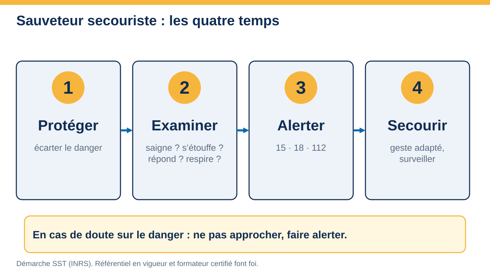
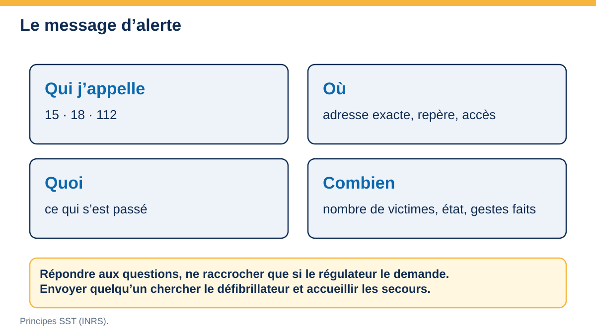

Gestes qui sauvent
Protéger, examiner, alerter, secourir : les principes du sauveteur secouriste du travail appliqués à la restauration. Le formateur anime les gestes en présentiel ; cette page est l’aide-mémoire à garder.
Cadre : qui, pourquoi, quelles obligations
Le sauveteur secouriste du travail (SST) est un salarié formé à porter secours à une victime d’accident ou de malaise et à contribuer à la prévention dans son entreprise. Il a donc deux rôles : secourir dans l’attente des secours spécialisés, et prévenir en repérant les situations dangereuses et en alertant.
Organise les secours : matériel de premiers secours adapté aux risques et facile d’accès (R. 4224-14), consignes de secours et numéros d’urgence portés à la connaissance du personnel (R. 4224-23), secouriste formé là où la réglementation l’impose (R. 4224-15, notamment travaux dangereux ; en restauration, la formation reste fortement recommandée).
Porte secours dans la limite de sa formation, alerte, et signale les situations dangereuses. Il ne se met pas lui-même en danger.
Selon le dispositif de l’INRS : une formation initiale, puis un maintien et une actualisation des compétences (MAC) périodiques. La durée et la périodicité se vérifient dans le référentiel en vigueur.
La démarche en quatre temps
Repérer le danger pour soi, la victime et les autres, puis le supprimer ou l’écarter : couper le gaz ou le courant, éteindre la source de chaleur, baliser un sol mouillé. Si le danger ne peut être supprimé et que la vie de la victime est menacée, un dégagement d’urgence est possible, à condition de le faire sans se mettre en danger.
Chercher dans l’ordre : saigne-t-elle abondamment ? s’étouffe-t-elle ? répond-elle ? respire-t-elle ? Puis les autres signes : douleur, malaise, brûlure, plaie, déformation.
15 (SAMU), 18 (sapeurs-pompiers) ou 112. Donner un message complet. Faire chercher le défibrillateur. Suivre les instructions de la régulation.
Pratiquer le geste adapté à ce que l’on a trouvé, surveiller la victime, la rassurer, la protéger du froid, jusqu’à l’arrivée des secours.

Donner l’alerte
Le message d’alerte tient en quelques phrases. Entraînez-vous à le dire à voix haute.
| Numéro | Service | Quand |
|---|---|---|
| 15 | SAMU : urgence médicale | Malaise, perte de connaissance, blessure grave |
| 18 | Sapeurs-pompiers | Incendie, accident, secours à personne |
| 112 | Numéro d’urgence européen, gratuit | Quand on hésite ou depuis un téléphone étranger |
| 114 | Urgence par SMS ou fax | Personnes sourdes ou malentendantes |
| 17 | Police, gendarmerie | Violence, agression |

- Qui appelle : nom, numéro de téléphone.
- Où : adresse exacte, repère, accès (cuisine, réserve, cave), où attendre les secours.
- Quoi : ce qui s’est passé, nombre de victimes, état (saigne, respire, répond).
- Combien et gestes faits.
- Ne pas raccrocher avant que la régulation le dise ; envoyer quelqu’un accueillir les secours et chercher le défibrillateur.
Fiches réflexes
Ouvrez chaque fiche : elle donne les signes, les gestes, ce qu’il ne faut pas faire.
Saignement abondant
Signes : le sang coule en jet ou en flot continu ; la compresse est vite imbibée.
- Protéger : se protéger des projections (gants, sacs), allonger la victime.
- Comprimer directement l’endroit qui saigne avec la main protégée, puis une compresse ou un tissu propre.
- Alerter, maintenir la compression sans relâcher.
- Si la compression directe est impossible ou inefficace et qu’un membre est en cause, le sauveteur formé peut poser un garrot, selon sa formation.
À ne pas faire : retirer la compresse pour regarder ; laisser la victime debout ; enlever un objet planté.
Étouffement (adulte, obstruction complète)
Signes : la personne ne peut plus parler, tousser ni respirer ; elle porte les mains à la gorge.
- Se placer derrière, un peu sur le côté, soutenir le thorax.
- Pencher la victime en avant : 5 claques vigoureuses dans le dos, entre les omoplates.
- Si c’est sans effet : 5 compressions abdominales (méthode de Heimlich), poings sous le sternum, vers le haut et l’arrière.
- Alterner 5 claques, 5 compressions, et alerter. Si la victime perd connaissance : l’allonger, alerter, débuter la réanimation.
À ne pas faire : donner à boire ; faire vomir ; donner des claques si la personne tousse efficacement (laisser tousser).
Personne inconsciente qui respire
Signes : ne répond pas, ne réagit pas ; la poitrine se soulève.
- Appeler, secouer doucement les épaules.
- Libérer les voies aériennes : basculer la tête en arrière, élever le menton.
- Vérifier la respiration pendant dix secondes au plus.
- Alerter, puis placer en position latérale de sécurité (PLS), surveiller la respiration jusqu’aux secours.
À ne pas faire : la laisser sur le dos ; donner à boire ; la laisser seule.
Arrêt cardiaque : réanimation et défibrillateur
Signes : inconsciente, ne respire pas ou respiration anormale (gasps).
- Alerter ou faire alerter, faire apporter le défibrillateur.
- Débuter les compressions thoraciques au centre de la poitrine : environ 100 à 120 par minute, enfoncement de 5 à 6 cm chez l’adulte, thorax relâché entre chaque compression.
- Selon sa formation, alterner 30 compressions et 2 insufflations ; sinon, compressions seules sans interruption.
- Dès l’arrivée du DAE : l’allumer, suivre ses instructions vocales, coller les électrodes, s’écarter quand il l’indique.
- Continuer jusqu’à l’arrivée des secours ou la reprise de la respiration.
À savoir : un défibrillateur automatisé est conçu pour être utilisé par tout le monde ; il ne délivre un choc que si la situation l’exige.

Brûlure
Signes : rougeur, cloques, peau blanche ou noircie ; douleur vive.
- Protéger : éloigner la source de chaleur, retirer les vêtements non collés, bijoux.
- Refroidir le plus tôt possible : arroser à l’eau tempérée, sans pression forte.
- Alerter si la brûlure est étendue, profonde, au visage, aux mains ou aux organes génitaux, ou si la victime est un enfant.
- Couvrir d’un linge propre ou d’un pansement adapté, surveiller.
À ne pas faire : appliquer du beurre, de la pâte ou un corps gras ; percer les cloques ; retirer un vêtement collé à la peau.
Plaie simple (coupure, écorchure)
Se laver les mains, nettoyer la plaie à l’eau et au savon, désinfecter avec un antiseptique, couvrir d’un pansement. En cuisine, changer de gants et couvrir le pansement d’un doigtier ou d’un gant avant de reprendre le travail avec des denrées.
Consulter si la plaie est profonde, souillée, ou si la vaccination antitétanique n’est pas à jour.

Plaie grave ou objet planté
Ne rien retirer. Allonger la victime, alerter. Comprimer autour de l’objet sans appuyer dessus, si la plaie saigne. Protéger la zone.
Malaise
Allonger la victime, surveiller, desserrer les vêtements, alerter si le malaise dure, s’accompagne de douleur dans la poitrine, de gêne respiratoire ou de perte de connaissance. Ne rien donner à boire à une personne qui n’est pas parfaitement consciente.
Traumatisme (chute, dos, tête)
Ne pas mobiliser la victime après une chute de hauteur ou en cas de douleur au dos ou au cou. Demander de ne pas bouger, caler la tête, alerter, surveiller. Ne pas retirer un casque.
Électrisation
Avant tout : couper le courant au tableau ou débrancher, sans toucher la victime tant qu’elle est en contact avec le courant. Alerter. Examiner : respire-t-elle ? Traiter comme une victime inconsciente ou en arrêt cardiaque si nécessaire, et signaler même si elle semble aller bien (troubles du rythme retardés).
Produit chimique : projection, ingestion, inhalation
Peau ou yeux : rincer abondamment et longuement à l’eau, retirer les vêtements souillés, alerter ou appeler un centre antipoison, présenter l’étiquette ou la fiche de données de sécurité. Ingestion : ne pas faire vomir, ne pas faire boire, alerter. Inhalation : sortir à l’air frais si on peut le faire sans danger, alerter.
Feu de cuisine
Alerter et évacuer si le feu s’étend. Couper la source d’énergie si on peut le faire sans danger. Feu d’huile (friteuse, poêle) : étouffer avec un couvercle ou une couverture anti-feu, jamais d’eau. Utiliser l’extincteur adapté, en visant la base des flammes, dos à la sortie. En cas de doute, on sort.

Situations types en restauration
| Situation | Danger | Premier réflexe | Prévention associée |
|---|---|---|---|
| Sol mouillé à la plonge | Glissade, chute | Sécuriser la zone, examiner, alerter si douleur ou perte de connaissance | Sols antidérapants, chaussures adaptées, nettoyage au fil de l’eau, bonne évacuation |
| Friteuse, huile chaude | Brûlure, incendie | Couper la chaleur, couvrir, jamais d’eau, refroidir la brûlure | Niveaux d’huile, thermostat de sécurité, couverture anti-feu, formation |
| Couteau, trancheuse | Coupure, section | Compression directe, alerter si saignement abondant | Gants anti-coupure, protecteurs, affûtage, rangement |
| Chambre froide | Enfermement, chute, froid | Alerter, ne pas rester seul, réchauffer | Ouverture de l’intérieur, éclairage, vêtements chauds |
| Cartons, bacs, livraisons | Lombalgie, écrasement | Arrêter, installer, alerter si douleur importante | Diable, aides à la manutention, charges adaptées |
| Produit d’entretien | Projection, inhalation | Rincer, aérer, alerter, présenter l’étiquette | Dosage automatique, étiquetage, ventilation, gants et lunettes |
| Service du soir | Malaise, collision, brûlure par plat | Allonger, alerter, protéger | Circulation organisée, plateaux, planning, pauses |


Trousse et matériel de secours
Il n’existe pas de liste unique : le contenu se définit selon les risques de l’établissement, avec le médecin du travail. À titre d’exemple de rubriques :
- Protection du sauveteur : gants, masque, sacs poubelle.
- Pansements, compresses stériles, bandes, sparadrap, ciseaux.
- Antiseptique cutané, solution de lavage oculaire si le risque chimique existe.
- Couverture de survie, accès à l’eau et à de la glace en cuisine.
- Un défibrillateur si l’établissement en est équipé, signalé et vérifié.
- Numéros d’urgence et adresse précise affichés près du téléphone.
Du secours à la prévention
Après un accident, le SST ne s’arrête pas au geste : il aide à comprendre ce qui s’est passé pour que cela ne se reproduise pas.
- Déclarer : l’employeur déclare l’accident du travail à la caisse d’assurance maladie dans les 48 heures (hors dimanches et jours fériés).
- Enregistrer les faits : qui, quand, où, quoi, quelle tâche.
- Chercher les causes avec la méthode des 5 pourquoi ou les 5M, sans chercher de coupable.
- Corriger : mesure immédiate, puis action durable.
- Mettre à jour le document unique : la situation vécue est-elle cotée ? la cotation change-t-elle ?
Scénarios à traiter en groupe
Pour chaque scénario : que faites-vous, dans quel ordre, que dites-vous au téléphone ? Ouvrez ensuite le corrigé.
1 · Un commis glisse à la plonge, se tient le poignet et grimace
Corrigé : protéger (signaler le sol, éviter la deuxième chute), examiner (répond, respire, douleur localisée), ne pas mobiliser un membre douloureux, alerter si doute sur une fracture, rassurer. Ensuite : déclarer, analyser, corriger la cause (sol, chaussures), mettre à jour le document unique.
2 · Un cuisinier se coupe profondément la paume, le sang coule en continu
Corrigé : comprimer directement, allonger, alerter (15 ou 112), maintenir la compression, surveiller. Ne pas retirer la compresse. Ensuite : déclarer, vérifier le couteau et la méthode de travail.
3 · Un serveur s’étrangle avec un morceau de pain, ne peut plus parler
Corrigé : reconnaître l’obstruction complète, 5 claques dans le dos, puis 5 compressions abdominales, alterner, alerter. S’il perd connaissance, l’allonger, débuter la réanimation.
4 · Feu de friteuse pendant le service
Corrigé : alerter (18), couper la source de chaleur si c’est possible sans danger, couvrir avec le couvercle ou la couverture anti-feu, jamais d’eau, évacuer en cas de doute. Brûlé : refroidir à l’eau tempérée et alerter selon la gravité.
5 · Un plongeur s’effondre, ne répond pas et ne respire pas normalement
Corrigé : alerter et faire apporter le défibrillateur, compressions thoraciques sans attendre, DAE dès son arrivée, continuer jusqu’aux secours.
6 · Un commis en chambre froide est resté enfermé, il grelotte et se plaint de vertiges
Corrigé : le dégager (le danger est la porte, pas le froid), le mettre au chaud, couvrir, surveiller la conscience, alerter si malaise persistant. Ensuite : vérifier l’ouverture intérieure, le règlement de travail en chambre froide.
Erreurs fréquentes
- Se précipiter sans protéger : on devient une deuxième victime.
- Donner à boire à une personne qui s’étouffe ou n’est pas parfaitement consciente.
- Appliquer du beurre ou un corps gras sur une brûlure.
- Mettre de l’eau sur un feu d’huile.
- Mobiliser une victime après une chute alors qu’elle se plaint du dos ou du cou.
- Raccrocher trop tôt avec la régulation.
- Oublier de noter l’accident et d’en chercher la cause.
Testez-vous
Réfléchissez, puis cliquez pour voir la réponse.
Dans quel ordre examine-t-on une victime ?
Saigne-t-elle abondamment ? S’étouffe-t-elle ? Répond-elle ? Respire-t-elle ?
Quel est le geste immédiat pour un saignement abondant ?
Comprimer directement l’endroit qui saigne.
Que fait-on avec une personne inconsciente qui respire ?
Libérer les voies aériennes, alerter, PLS, surveiller la respiration.
Quelle est la fréquence des compressions thoraciques ?
Environ 100 à 120 par minute, enfoncement de 5 à 6 cm chez l’adulte.
Quel est le bon réflexe sur un feu de friteuse ?
Étouffer avec un couvercle ou une couverture anti-feu ; jamais d’eau.
Quand déclare-t-on un accident du travail ?
L’employeur le déclare à la caisse d’assurance maladie dans les 48 heures (hors dimanches et jours fériés).